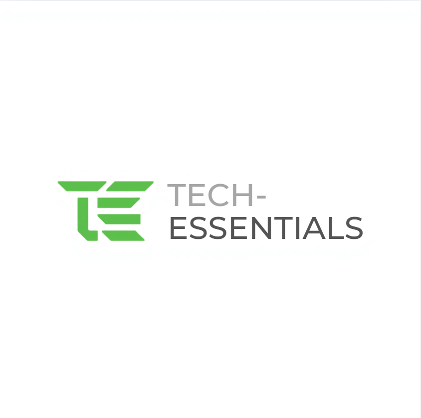

Insight That Keeps You Running
End-to-end monitoring, observability, and security solutions that ensure your IT environments remain resilient, optimized, and ironclad.
TechEssentials (Pty) Ltd delivers essential monitoring, observability, and Security services focused on improving visibility, reliability, compliance, and performance across IT environments.
Modern businesses rely on complex IT systems to deliver services and support daily operations. Continuous monitoring, observability, and robust security analytics provide the deep visibility needed to proactively manage performance, availability, and risk before issues impact your bottom line.
End-to-end IT systems monitoring for maximum reliability and better customer experience.
Continuous monitoring of servers, virtual machines, and cloud infrastructure.
Monitoring of network devices, connectivity, and traffic health.
Health and performance monitoring of critical applications and services.
Centralized dashboards and insights to understand system behaviour.
Actionable alerts to notify the right people at the right time.
Trend analysis and reporting for capacity and performance planning.
Real-time threat detection and log analysis to ensure regulatory compliance.
Core infrastructure monitoring providing 24/7 visibility into server, network, and service availability.
Deeper performance monitoring with trend analysis and improved alerting accuracy for growing environments.
Enhanced visibility using metrics, dashboards, and contextual insights to help teams understand system behavior and impact.
Services are delivered under a clear agreement defining scope, alerting methods, reporting frequency, and responsibilities. Monitoring focuses on visibility and early detection; remediation is handled separately unless explicitly agreed.
If you would like to discuss your monitoring and observability requirements, please get in touch.